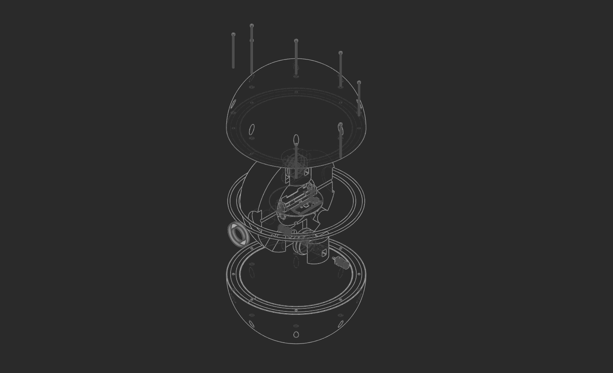
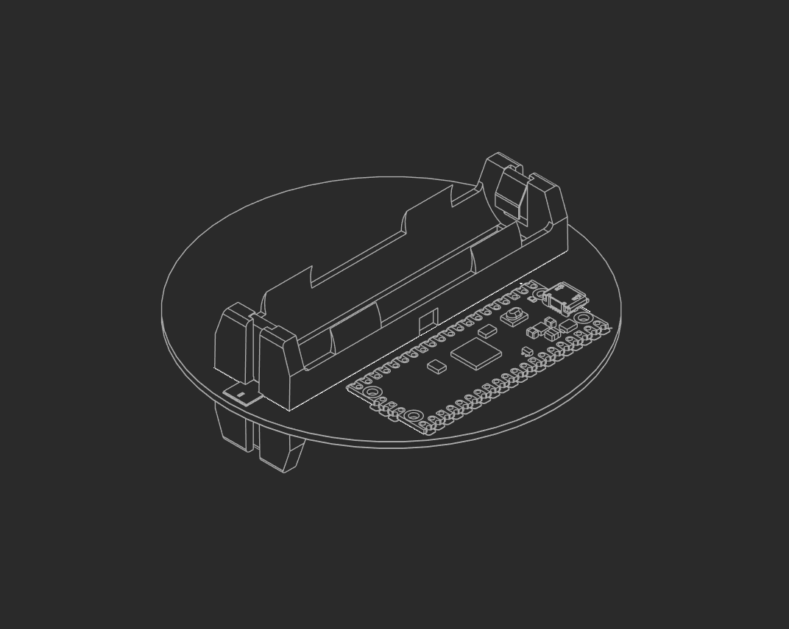
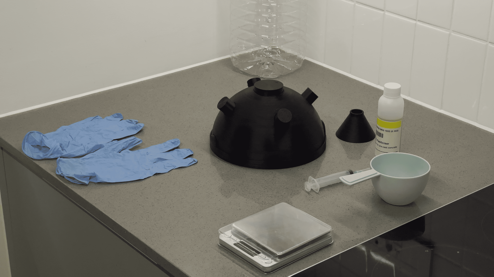
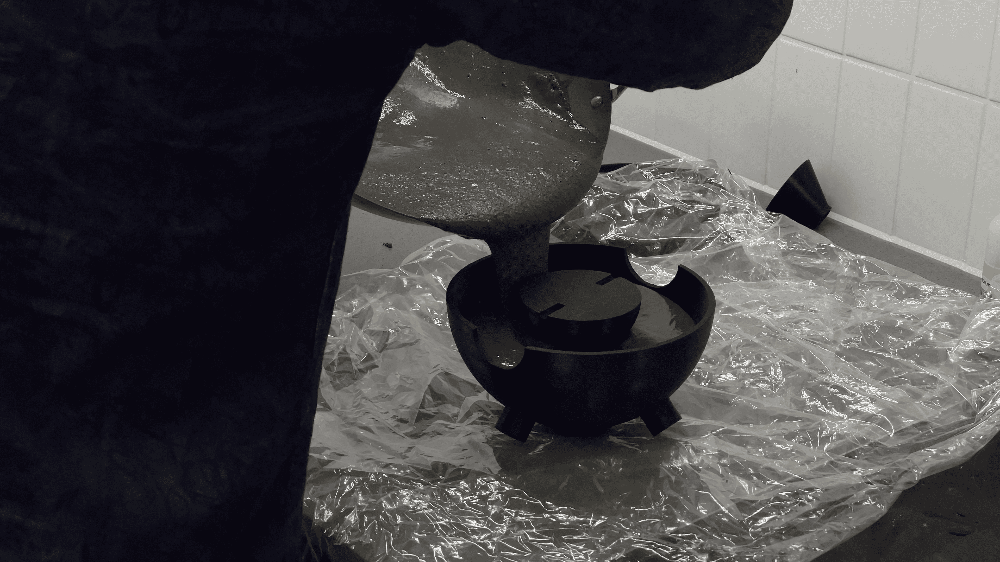

Cambrian Charter
A marine AUV project
Description
Cambrian Charter is designing and building spherical autonomous marine rovers for data collection, focusing on:
- Climate data
- Temperature
- Salinity
- Ocean currents
- Pressure
- Geological data
- Topography
- Bathymetry
- Geomagnetism
- Local magnetic field interactions
- Acoustic data
- Ultrasonic signatures
- Ambient hydrophonics

Commercial Potential
The active autonomous machines, paired with cutting-edge proprietary data processing, open potential across a wide range of commercial applications:
Research
- Climatological research
- Marine biology research
- Marine geological research
- Meteorology
Energy & Resources
- Oil and gas surveying
- Oil and gas infrastructure inspection
- Oil and gas infrastructure support
- Deep-sea mining operational support
Commerce & Defence
- Maritime trade tracking data
- Maritime trade quantitative data
- Maritime defence
Survey & Frontier
- Deep-sea surveying
- Disaster prediction and early warning
- Off-world exploration and operations
Gallery





Roadmap
Hardware
The hardware includes all the sensors, driving circuitry, computational chips, and the electro-mechanical drive assembly. For now, the hull is elevated to its own status outside of the general hardware designation.
Software
The software will perform the sophisticated autonomous control, AI, data-processing, mathematical-statistical algorithms, data handling, power management, and communications. This will form an internal ecosystem of interconnected subsystems according to cybernetic theory.
Printed Hull
The printed hull is arguably the most critical design component of the entire venture. Even without anything else, this would allow some level of machine to reach depths.
About
This project began as a dedicated engineering challenge, founded by a quantitative analyst with a mathematical-statistical and actuarial background, proficiency in programming, and an obsessive interest in science and technology. The venture is still in an early pre-revenue phase, as a working prototype is under active development. As such, the current state of operations falls under research and development.